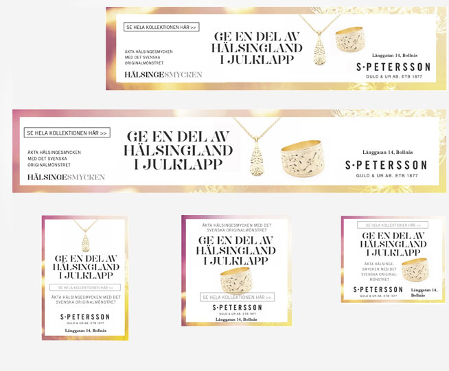

Digital
annonsering
Problem
Att handla hållbart upplevs svårt. Tilltron till vad företag själva lovar är låg. Och konsumenter vet ofta inte var de ska leta efter tillförlitlig information inför ett köp.
